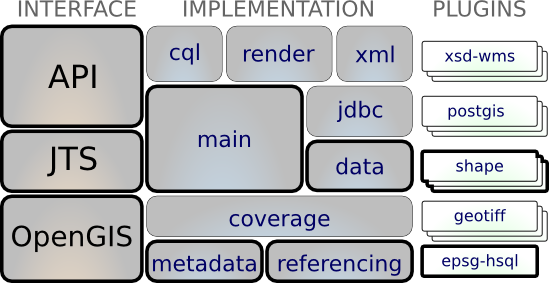

Data¶
Supports access to feature information (ie vector information) from a range of data sources. Additional DataStore plugins are available from gt-jdbc for database access.
The Data module is all about hoisting data (usually in the form of features) off of external services, disk files etc... into your application. This is where you can finally start putting the toolkit to work.
The gt-data module is the foundation for implementing additional gt-api DataStore formats:
- Abstract classes for gt-api DataStore implementors to start from such as ContentDataStore and DirectoryDataStore
The gt-data module requires plug ins for different formats to be supplied. This module does not define any additional interfaces beyond those provided by gt-api.
Maven:
<dependency>
<groupId>org.geotools</groupId>
<artifactId>gt-data</artifactId>
<version>${geotools.version}</version>
</dependency>
Contents
DataStore plugins:
Unsupported plugins: